2015-08-18 - Nº 16
Editorial
Aqui está a Newsletter Nº 16 no seu formato habitual.
Esta Newsletter encontra-se mais uma vez disponível no sistema documenta do altLab. Todas as Newsletters encontram-se indexadas no link.
Esta Newsletter tem os seguintes tópicos:
- Novidades da Semana
- Ciência e Tecnologia
- Cursos MOOC
- Modelos 3D
- Open Source
- Circuitos
- Artigo do Maker
- Compras
A Google já definiu o nome de código da próxima versão de Android - Marshmallow. A Samsung apresenta um disco SSD com uma capacidade estratosférica - 16TB e a Atmel apresenta uma EEPROM que usa literalmente dois pinos. Nesta Newsletter iremos construir um circuito para calcular o valor de resistências. Iremos ver uma ferramenta open-source para a criação e modelação 3D - o blender. Será apresentado um projeto de maker que é um inibidor de controlo remoto.
 João Alves ([email protected])
João Alves ([email protected])
O conteúdo da Newsletter encontra-se sob a licença  Creative Commons Attribution-NonCommercial-ShareAlike 4.0 International License.
Creative Commons Attribution-NonCommercial-ShareAlike 4.0 International License.
Novidades da Semana ^
Atmel – World’s most innovative 2-pin self-powered serial EEPROM (AT21CS01)
"Atmel launched the industry’s most innovative Single-Wire EEPROM with only two-pins—a data pin and ground pin for operation—making the new family ideal for the Internet of Things (IoT), wearables, consumable, battery and cable identification markets. The new devices are self-powered, eliminating the need for a power source or Vcc pin, with a parasitic power scheme over the data pin. These devices provide best-in-class ultra-low power standby of 700nA, 200µA for write current, and 80µA for read current at 25 degree Celsius—delivering just one-third of the power of leading competitors. With confined spacing in smaller IoT, wearables, battery and cable identification applications, Atmel’s AT21CS01/11 devices eliminate the need for external capacitors and rectifiers with its parasitic power scheme over a single data pin. Additionally, the new devices have an ultra-high write endurance capability to allow more than one million cycles for each memory location to meet the requirements for today’s high-write endurance applications."
Samsung unveils 2.5-inch 16TB SSD: The world’s largest hard drive
"At the Flash Memory Summit in California, Samsung has unveiled what appears to be the world's largest hard drive—and somewhat surprisingly, it uses NAND flash chips rather than spinning platters. The rather boringly named PM1633a, which is being targeted at the enterprise market, manages to cram almost 16 terabytes into a 2.5-inch SSD package. By comparison, the largest conventional hard drives made by Seagate and Western Digital currently max out at 8 or 10TB. The secret sauce behind Samsung's 16TB SSD is the company's new 256Gbit (32GB) NAND flash die; twice the capacity of 128Gbit NAND dies that were commercialised by various chip makers last year. To reach such an astonishing density, Samsung has managed to cram 48 layers of 3-bits-per-cell (TLC) 3D V-NAND into a single die. This is up from 24 layers in 2013, and then 36 layers in 2014."
Develop a sweet spot for Marshmallow: Official Android 6.0 SDK & Final M Preview
"Whether you like them straight out of the bag, roasted to a golden brown exterior with a molten center, or in fluff form, who doesn’t like marshmallows? We definitely like them! Since the launch of the M Developer Preview at Google I/O in May, we’ve enjoyed all of your participation and feedback. Today with the final Developer Preview update, we're introducing the official Android 6.0 SDK and opening Google Play for publishing your apps that target the new API level 23 in Android Marshmallow."
Ciência e Tecnologia ^
Single-catalyst water splitter from Stanford produces clean-burning hydrogen 24/7
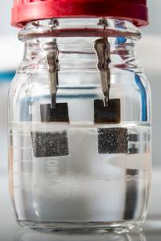
"Stanford University scientists have invented a low-cost water splitter that uses a single catalyst to produce both hydrogen and oxygen gas 24 hours a day, seven days a week. The device, described in a study published June 23 in Nature Communications, could provide a renewable source of clean-burning hydrogen fuel for transportation and industry."
Stanene is The New Graphene as the Best Known Semiconductor Material
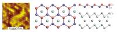
"Two years after physicists predicted that tin should be able to form a mesh just one atom thick, researchers say that they have made it. The thin film, called stanene, is reported on 3 August in Nature Materials1. But researchers have not been able to confirm whether the material has the predicted exotic electronic properties that have excited theorists, such as being able to conduct electricity without generating any waste heat. Stanene (from the Latin stannum meaning tin, which also gives the element its chemical symbol, Sn), is the latest cousin of graphene, the honeycomb lattice of carbon atoms that has spurred thousands of studies into related 2D materials. Those include sheets of silicene, made from silicon atoms; phosphorene, made from phosphorus; germanene, from germanium; and thin stacks of sheets that combine different kinds of chemical elements (see ‘The super materials that could trump graphene’)."
Flexible high-temperature dielectric materials from polymer nanocomposites
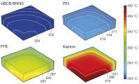
"Dielectric materials, which store energy electrostatically, are ubiquitous in advanced electronics and electric power systems. Compared to their ceramic counterparts, polymer dielectrics have higher breakdown strengths and greater reliability, are scalable, lightweight and can be shaped into intricate configurations, and are therefore an ideal choice for many power electronics, power conditioning, and pulsed power applications. However, polymer dielectrics are limited to relatively low working temperatures, and thus fail to meet the rising demand for electricity under the extreme conditions present in applications such as hybrid and electric vehicles, aerospace power electronics, and underground oil and gas exploration."
Cursos MOOC ^
- A System View of Communications: From Signals to Packets (Part 1) - Começa a 25 de Agosto.
- Introduction to Computer Science and Programming Using Python - Começa a 26 de Agosto.
- An Introduction to Interactive Programming in Python (Part 1) - Começa a 29 de Agosto.
- An Introduction to Interactive Programming in Python (Part 2) - Começa a 29 de Agosto.
- Understanding Video Games - Começa a 1 de Setembro.
- Technology Entrepreneurship - Começa a 16 de Setembro.
- Begin Robotics - Começa a 21 de Setembro.
- Cryptography II - Começa a 19 de Outubro.
Modelos 3D ^
Com a disponibilidade de ferramentas que permitem dar azo a nossa imaginação na criação de peças 3D e espaços como o thingiverse para as publicar, esta rubrica apresenta alguns modelos selecionados que poderão ser úteis.
Parabol laptop stand (http://www.thingiverse.com/thing:888689)
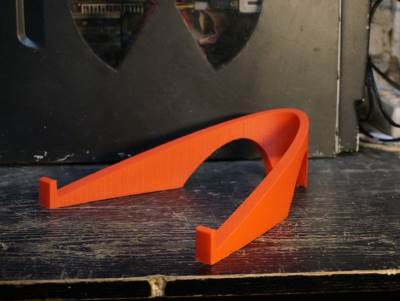
The laptop in the photos is 14". The model is pretty large, 240x240x78mm. It is generated from a pair of SVG files, which are the top and side views.
For more information see the post here: http://wemakethings.net/2015/06/19/parabol-laptop-stand/
If you want to modify the shape, the sources are on Github: https://github.com/kspi/parabol
Parametric Smartphone Stand / Holder with custom text (http://www.thingiverse.com/thing:280872)
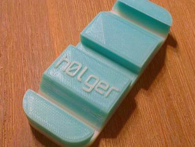
Holds your smartphone or tablet in three different angles!
45 degree, 30 degree and 90 degree.
Fully parametric and customizable. Print your name on it!
Customizable 7-segment display module (http://www.thingiverse.com/thing:937806)
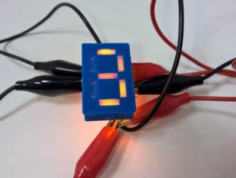
I needed a small display for my fridge, but couldn't find the perfect one (besides in some places these are damn expensive) and I wondered how a printed seven segment display would work? The answer is that the printed display works very sweet!
As an extra bonus notice in the openscad code that I adapted most of the led sizes based on a logaritmic and quadratic formula (to define the led height and flange size based on the diameter) rather than hard-coding every set of parameters, quite nice eh?
Open Source ^
blender
Esta semana vamos apresentar uma ferramenta muito potente e que é referencia na sua aérea - o blender. Trata-se de uma ferramenta de criação 3D. Suporta toda a cadeia de criação de elementos 3D desde a modelação, a armação, a animação, a simulação, produção, composição e controlo de movimentos, edição de vídeo e criação de jogos.
Encontra-se atualmente na versão 2.75a que foi lançada a 8 de Julho de 2015 e está disponível para Windows, MAC OSX, GNU/Linux e FreeBSD. Pode ser descarregado deste site.
Usa uma interface OpenGL para disponibilizar uma experiência consistente.
Tem um conjunto de requisitos técnicos que está diretamente relacionado com o trabalho que é possível fazer com a ferramenta. Embora funcione numa máquina com 2 GB de memória com um processador de 32-bits dual core a 2Ghz é recomendado que seja usada uma máquina com pelo menos 8 GB de memória e um processador quad-core de 64-bits. A placa gráfica deve ser compatível OpenGL e ter 1GB de memória RAM.
A Blender Foundation, que é uma organização publica Holandesa, suporta e facilita os projectos no blender.org. O desenvolvimento da ferramenta é feito por centenas de pessoas espalhadas pelo mundo. Estas são artistas, animadores, cientistas, especialista em VFX, utilizadores comuns, etc. Como é uma ferramenta open-source o público é convidado a fazer alterações à ferramenta que dão origem a novas funcionalidades, resolução de bugs, melhor usabilidade, etc.
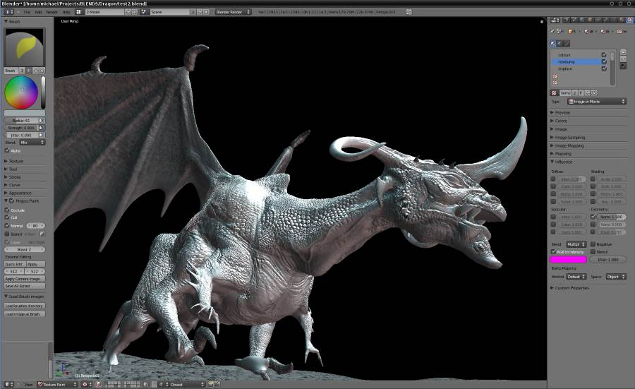
As principais funcionalidades da ferramenta são:
- Renderização foto-realística
- Renderização por GPU e CPU
- Previsão em tempo real
- Suporte de Luz HDR
- Licença permissiva para utilização com software externos
- Modelação Rápida
- Utilização de atalhos de teclado para um desempenho superior
- Suporte N-Gon
- Corte, recolha e dissolução de lados
- Preenchimento de ponte e de grelha
- Scripting em Python para ferramentas customizadas e add-ons
- Materiais Realísticos
- Suporte completo de Nós para customização completa
- Shaders muito realísticas como vidro, superfícies translucidas e SSS
- suporte da Linguagem de Open Shading (OSL) para codificação de Shaders únicos
- Rigging Rápido
- armadura, esqueleto e pele automáticos
- Pintura equilibrada
- Funcionalidade de espelho
- Camadas de osso e grupos coloridos para organização
- Ossos interpolados em Linhas Bezier
- Kit de animação
- Caminhos automáticos de passeio
- Editor de animações de poses de personagens
- Movimentos independentes através de NLA - Animação não linear
- Kinematics IK com frente/invertido para poses rápidas
- Sincronização de som
- Escultura
- 20 tipos diferentes de brushs
- Suporte multi-resolução de esculpimento
- Topologia dinâmica de esculpimento
- esculpimento em espelho
- Preparação rápida de UV
- Projecções rápidas em cubo, cilindro, esfera e câmara
- Desembrulho baseado em ângulo e conformado (com costuras de ponta e vértice)
- Pintura directa sobre a malha
- Múltiplas camadas de UV
- Exportação da imagem do layout UV
- Compositor total
- Biblioteca impressionante de nós para criar efeitos de câmara, graduação de cor, vignettes e mais
- Suporte de camada de renderização
- Composição total de ficheiros de imagens e vídeo
- Capacidade de renderizar ficheiros multi-camada OpenEXR
- Multi-threaded
- Simulações impressionantes
- Fluidos - simulação realista de agua e outros fluidos
- Fumo - Interação na cena de fumo e chamas.
- Cabelo - Cabelos que interagem com colisões
- Roupa - Simulações de superfícies incrivelmente realistas para roupas e ambientes
- Corpo rígido - Faz qualquer objecto destruível e colidível
- Partículas - para criação de elementos como chuva, faiscas ou estilhaços
- Criação de Jogos
- Capacidade de portar os modelos para qualquer motor de jogos third-party
- Criar ou codificar a sua lógica de jogo
- Integração completa de Física de projécteis
- API em Python para controlo avançado e IA
- Suporte para todo o tipo de luz dinâmica OpenGL, sombreamento de toons, materiais animados assim como o mapeamento Normal e Parallax
- Reprodução de jogos dentro do blender sem compilar ou pré-processamento
- Áudio espacial 3D usando OpenAL
- Câmara e acompanhamento de objectos
- Acompanhamento Automático e manual
- Reconstrução de Câmara potente
- Pré-visualização em tempo real da filmagem e da cena 3D
- Suporte para acompanhamento Planar e em Tripé
- Biblioteca de Extensões
- Geradores de arvores, terreno, nuvens e heras.
- Objectos fracturados
- Impressão 3D
- Sistema de Rigify meta-rigging
- Suporte para o formato de importação/exportação para o AfterEffects, DirectX, Unreal Game Engine e mais
- Edição de Vídeo
- Visualização ao vivo, apresentação de histogramas, chroma Vectorscope e luma waveform
- Mistura de áudio, sincronização dobragem e visualização de ondas
- Até 32 slots para adicionar vídeo, imagens, áudio, cenas, mascaras e efeitos
- Controlo de velocidade, ajuste de camadas, transições, frames-chave, filtros e mais
- Formatos de ficheiros
- Imagens: JPEG, JPEG2000, PNG, TARGA, OpenEXR, DPX, Cineon, Radiance HDR, SGI Iris, TIFF
- Vídeo: AVI, MPEG e Quicktime
- 3D: 3D Studio (3DS), COLLADA (DAE), Filmbox (FBX), Autodesk (DXF), Wavefront (OBJ), DirectX (x), Lightwave (LWO), Motion Capture (BVH), SVG, Stanford PLY, STL, VRML, VRML97, X3D
- Interface flexível
- consistência ao longo de todas as plataformas
- Janelas de pop-up não disruptivas
- Texto nítido (suporte para o sistema retina do OSX)
Links úteis:
Circuitos ^
Aqui é apresentado um circuito simples que poderá ser construído com componentes.
OhmMeter com Auto Ranging
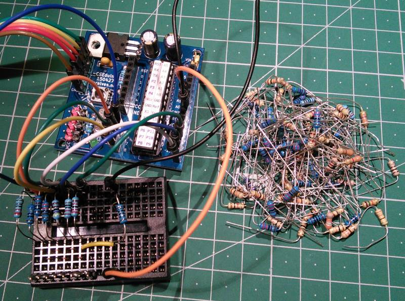
Hoje iremos construir dois circuitos para calcular o valor de uma resistência.
O principio usado nestes circuitos é o da divisão de tensão. A medição é feita com uma porta analógica de um micro-controlador. Foi usado o CSEduino mas poderia ter sido usado outro Arduino qualquer.
Usando a lei de Ohm é possível calcular a resistência da qual não sabemos o valor (Rx). Para se calcular o valor da resistência temos primeiro que calcular o valor da tensão que passa nessa resistência. Partindo do pressuposto que a tensão dada ao circuito é de 5 V. a formula é a seguinte: VR1 = 5 - VRx. A corrente é i = VR1/R1 = (5 - VRx)/R1 uma vez que o Rx e o R1 se encontram ligados em série, a corrente que passa neles é idêntica. Por isso a resistência desconhecida Rx = Vx/i.
No entanto este método simples tem um problema que é quando a diferença entre o R1 e o Rx é grande, o cálculo do valor do Rx é extremamente impreciso. Isto acontece porque quase toda a tensão cairá na resistência de maior valor o que impedirá a medição da outra resistência.
No segundo circuito tenta-se eliminar esta situação criando um sistema de "auto-ranging". O micro-controlador vai controlar o estado de cada um dos pinos que se encontra ligado a cada uma das resistências conhecidas e perceber qual a resistência mais adequada para fazer a medida. Para evitar o "fly-back" que existiria pelo facto de termos múltiplas resistências ligadas recorre-se à técnica de "desligar" os restantes pinos colocando-os no estado designado por "alta-impedância".
Este circuito foi baseado no circuito que se encontra no seguinte link.
Esquemático
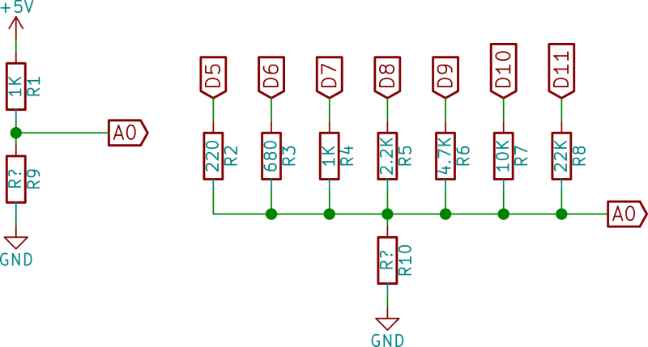
Componentes (BOM):
Circuito 1:
- 1x Resistência de 1K Ohms (R1)
Circuito 2:
- 1x Resistência de 220 Ohms (R2)
- 1x Resistência de 680 Ohms (R3)
- 1x Resistência de 1K Ohms (R4)
- 1x Resistência de 2.2K Ohms (R5)
- 1x Resistência de 4.7K Ohms (R6)
- 1x Resistência de 10K Ohms (R7)
- 1x Resistência de 22K Ohms (R8)
As resistências R9 e R10 são as que o circuito vai calcular o valor.
Para que haja alguma precisão na leitura dos valores aconselha-se que sejam usadas resistências com 1% de tolerância ou menos.
Pin-out dos IC/Componentes
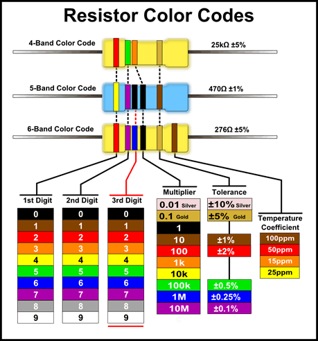
Código
O primeiro sketch faz o teste usando um divisor de tensão simples.
const int resistorPin = A0;
int raw = 0;
const int Vin = 5;
float Vout = 0;
float R1 = 1000;
float Rx = 0;
float buffer = 0;
void setup() {
Serial.begin(9600);
}
void loop() {
raw = analogRead(resistorPin);
Vout = (5.0 / 1023.0) * raw;
buffer = (Vin / Vout) - 1;
Rx = R1 / buffer;
Serial.print("Voltage: ");
Serial.println(Vout);
Serial.print("Rx: ");
Serial.println(Rx);
delay(1000);
}
// Sketch uses 4,134 bytes (12%) of program storage space. Maximum is 32,256 bytes.
// Global variables use 234 bytes (11%) of dynamic memory, leaving 1,814 bytes for local variables. Maximum is 2,048 bytes.
O segundo sketch faz o teste usando um conjunto de resistências. Se não tiver os valores das resistência do esquema pode ajustar no código o valor das resistências, colocando-as sempre por ordem crescente.
const byte resistorPin = A0;
const byte resistorPins[] = {5, 6, 7, 8, 9, 10, 11};
# define NUMBERPINS sizeof(resistorPins)
const int resistorValues[NUMBERPINS] = {220, 680, 1000, 2200, 4700, 10000, 22000}; // Valor das resistências
int resistorReads[NUMBERPINS] = {};
double vx;
float rx;
double i;
boolean novalue;
void setup() {
pinMode(resistorPin, INPUT);
Serial.begin(9600);
while (!Serial) ;
Serial.println("CSEduino Ohmmeter");
}
int readvalues(byte mask) {
for(byte p = 0; p < NUMBERPINS; p++) {
pinMode(resistorPins[p], INPUT); // High-impedance
}
for(byte p = 0; p < NUMBERPINS; p++) {
if ((mask & (1 << p)) != 0) {
pinMode(resistorPins[p], OUTPUT);
digitalWrite(resistorPins[p], HIGH);
}
}
return analogRead(resistorPin);
}
void loop() {
for(byte p = 0; p < NUMBERPINS; p++) {
resistorReads[p] = readvalues(1 << p);
}
novalue = true;
for(byte p = NUMBERPINS; p > 0; p--) {
if (resistorReads[p-1] >= 450) {
vx = (resistorReads[p-1]) * (5.0 / 1024.0);
i = (5.0/vx) - 1;
rx = (resistorValues[p-1] / i);
novalue = false;
break;
}
}
if (novalue) {
vx = (resistorReads[0]) * (5.0 / 1024.0);
i = (5.0/vx) - 1;
rx = (resistorValues[0] / i);
}
if(vx > 4.8) {
Serial.println("----INFINITY----");
} else {
if(rx < 1000) {
Serial.print(rx);
} else {
rx = rx / 1000;
Serial.print(rx);
Serial.print("k");
}
Serial.println(" Ohms");
}
delay(200);
}
// Sketch uses 5,056 bytes (15%) of program storage space. Maximum is 32,256 bytes.
// Global variables use 291 bytes (14%) of dynamic memory, leaving 1,757 bytes for local variables. Maximum is 2,048 bytes.
Links úteis:
Artigo do Maker ^
Projeto interessante publicado por um maker.
TIC-TAC TV Remote Jammer
O projecto de maker da semana é-nos apresentado pelo DangerousTim com o seu "TIC-TAC TV Remote Jammer". Este projecto encontra-se na página do instructables.
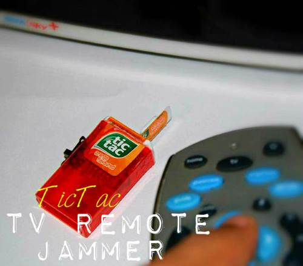
O projeto apresentado, escondido numa caixa de Tic Tac, permite inibir o envio de sinais infra-vermelhos para a TV.
Como funciona:
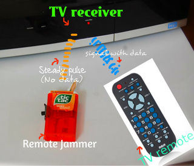
Muito simples. O comando remoto envia um sinal IR pulsado com informação codificada no mesmo. O dispositivo envia um pulso IR de cerca de 40kHz sem quaisquer dados. Desta forma a TV não consegue receber instruções do controlo remoto.
Passo 1: Detalhes do projecto
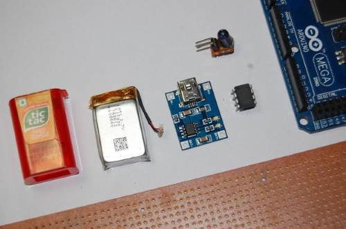
Tempo de execução: max. 3 horas
Custo: ~$10
Materiais:
- um chip ATtiny13/45/85 - Preferencialmente um ATtiny45
- Um LED IR - a probabilidade de funcionar é melhor se for usado um LED IR de um controlo remoto antigo.
- Pequena bateria de Li-ion (com cerca de 150-300mAh)
- Circuito de carregamento da bateria Li-ion
- Uma PCB
- Botão on/off para montar na PCB
- Fio
- Caixa TicTac
Passo 2: Programar o ATtiny: O Circuito....
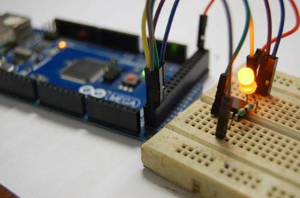
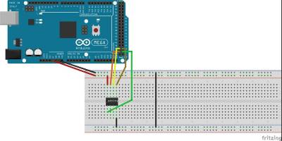 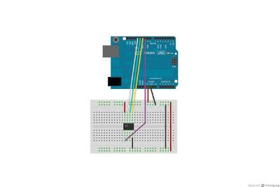
Fazer as conexões na breadboard como apresentadas acima.
Ter em atenção que as ligações são diferentes no MEGA e no UNO.
Passo 3: Programar o ATtiny: gravar o código....
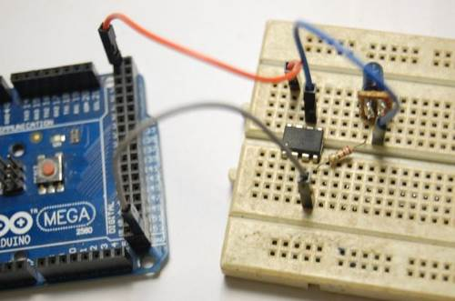
Siga as instruções neste guia para ver como carregar o bootloader e enviar o código para o chip ATtiny13.
Para enviar o código para outro micro-controlador, verifique os seguintes links:
- Para o ATtiny45
- Para o ATtiny85
- Para o ATtiny2313
- Para o ATmega8
Aqui está o código para o ATtiny13:
void setup(){
pinMode(1, OUTPUT);
}
void loop(){
digitalWrite(1, HIGH);
delayMicroseconds(12);
digitalWrite(1, LOW);
delayMicroseconds(12);
}
Se tiver qualquer outro attiny com mais do que 2K de memória flash, o código seguinte também funcionará:
void setup(){
pinMode(1, OUTPUT);
}
void loop(){
tone(1, 38500); //adjust the frequency if it doesn't work for your TV
}
Passo 4: Soldar o circuito
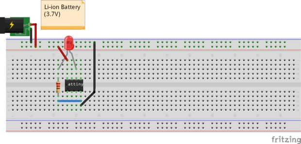
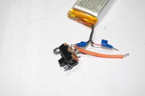 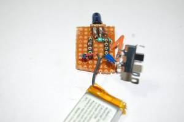
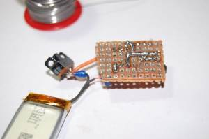 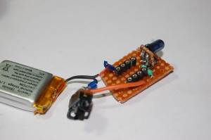
O circuito foi todo soldado numa Protoboard com cerca de 2x2.5cm. O diagrama do circuito está mais acima. De notar que foi adicionado um botão on/off que não está no diagrama.
Passo 5: Preparar o invólucro
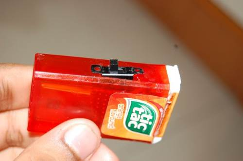
A abertura branca da caixa de TicTacs pode ser facilmente retirada para que se coloque o circuito no seu interior. Adicionalmente deverá ser feito um buraco com um x-acto para colocar o botão.
Após inserido o circuito e a bateria deverá voltar a ser colocada a tampa e usar cola se necessário.
Passo 6: Testar
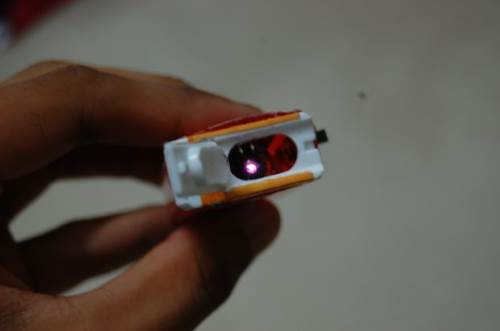
O LED IR emite luz em frequências que não são visíveis pelo olho humano. Contudo, a maior parte das câmara dos smartphones conseguem detetar os raio IR. A luz IR aparecerá a brilhar num tom purpura no écran da Câmara.
De seguida deve testar-se para verificar se o circuito efectivamente bloqueia o comando remoto. Mantenha a caixa TicTac em frente ao receptor de TV, de forma a que o LED se encontra direccionado para o receptor da TV. Tente usar o comando para mudar de canal ou de volume, se a TV não responder ... funciona!!!
Resolução de problemas:
Se o circuito não bloquear o controlo remoto, testes estes passos para tentar pô-lo a funcionar:
- Verificar se o LED IR está a funcionar com o procedimento atrás descrito
- Testar com diferentes frequências de pulso. Tentar valores entre 38 e 41kHz. (Nota: Isto apenas vai funcionar com micro-controladores com mais de 2K de memória Flash)
- Usar outro LED IR de outro controlo remoto antigo.
- Tentar usar múltiplos LEDs em paralelo para aumentar o sinal.
AVISO: Faça os testes em segredo. Não quer que os outros saibam o que anda a fazer.
Passo 7: Recarregar a bateria
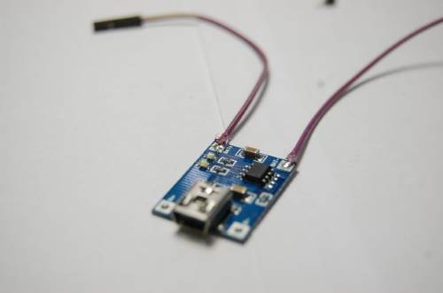
Uma coisa que ficou esquecida antes de colocar o circuito dentro do invólucro foi por conectores para que se possa carregar a bateria. Muitos dos carregadores de baterias li-ion estão ligados directamente aos terminais da bateria, por isso não é preciso nada de especial em termos de soldadura.
O jammer aguenta cerca de 6 horas antes do seu sinal ficar demasiado fraco para bloquear a TV.
Outros artigos/projetos interessantes de ler:
- Arduino Generic Logic Analyzer
- Bread board tips and tricks: beginner to proficient
- 10 Breadboard Projects For Beginners
Compras ^
Artigos do ebay ou de outras lojas online que poderão ser úteis em projetos.
Hot 400PCS 1/4W Resistance 1% Metal Film Resistor Bag 20 Kinds Each 20 Total
(http://www.ebay.co.uk/itm/221681399129) - £1.50
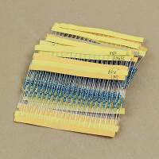
Description:
- 100% brand new and high quality.
- Experimental resistance.
- 1% error.
- 20 kinds of resistance.
- Each of 20pcs.
Specifications:
- 10Ω, 22 Ω, 47 Ω, 100 Ω, 220Ω, 470Ω, 680Ω
- 1KΩ, 2.2KΩ, 4.7KΩ, 6.8KΩ, 10KΩ, 22KΩ
- 47KΩ, 68KΩ, 100KΩ, 220KΩ, 470KΩ, 680KΩ, 1mΩ, Each 20pcs, Total 400pcs
50pcs 5mm round top Waterclear Ultra-Bright LED Wholesale
(http://www.ebay.co.uk/itm/151509399761) - £2.10
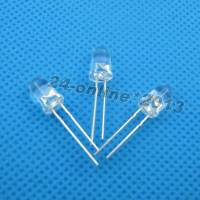
100Pcs 1N4148 IN4148 DO-35 Switching Signal Doide uk2015
(http://www.ebay.co.uk/itm/181719077100) - £0.99
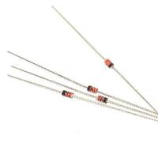
Packing List：
- 100Pcs New 1N4148 IN4148 DO-35 Switching Signal Doide
That's all Folks!